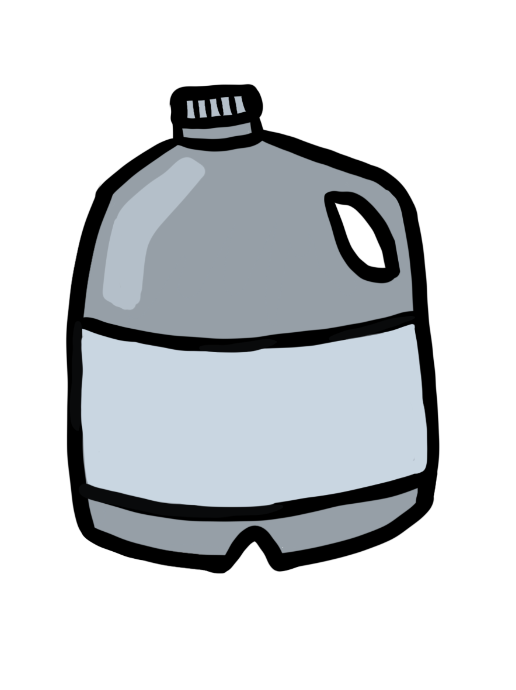
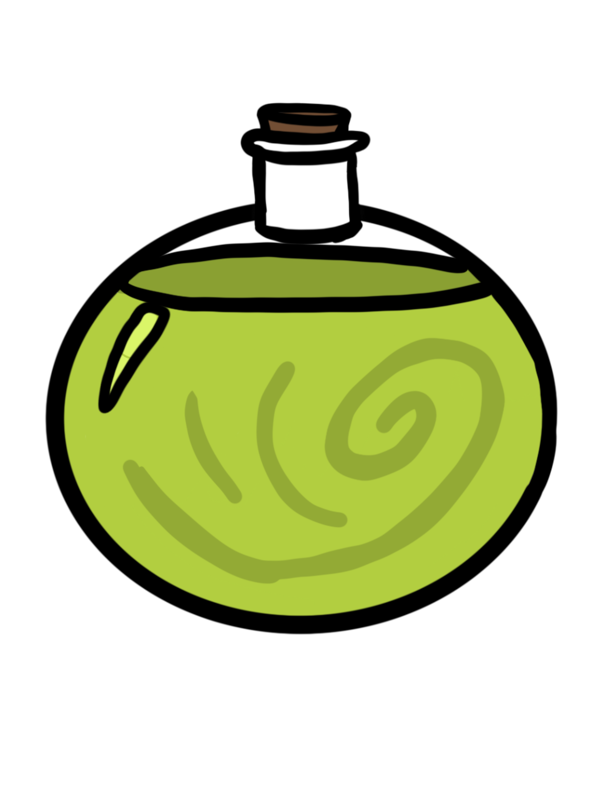
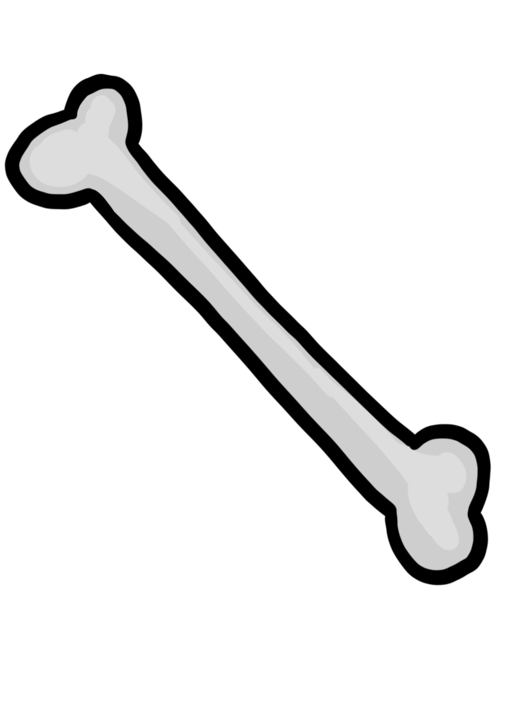

STARTING INVENTORY

Milk

Life Force

Gary
HISTORY
A Skeleton brought to life by The Evil Underlord Archamage using the power of The Emerald Shard. Their lifeforce was bound to the Archmage in indentured servitude, that is until his minions unionized last fall. They now work to reform the undead command structure to the benefit of the little guys, gals, and ghosts including installing an HR office in the caves beneath the Evil Red Mountain. Now our Undead friend is free to adventure outside the evil eye of his employer where they enjoy freelancing as an adventurer and hope to bring back a trinket of their last adventure for the next staff white elephant gift exchange.
STRENGTHS
- Playing the Xylophone
- Organizing protests
- Strong bones
- Communication
- Adoration of Their Fellow Minions
WEAKNESSES
- Lack of Ligaments
- Evil Archmages
- Empty head
- Will Die If Magic Fails
- Scares Local Villagers